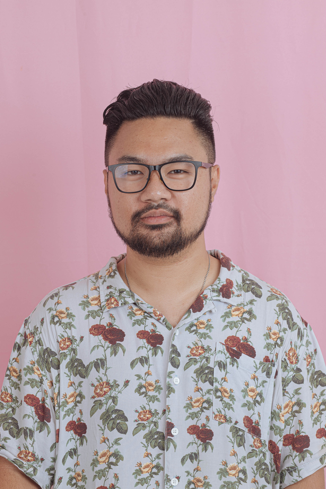

Doe Jon

Summary
That there, that's not me. I go where I please.
I walk through walls, I float down the Liffey.
I'm not here. This isn't happening.
I'm not here, I'm not here
Education
- Bachelor of Applied Design: Digital Media (2012), Billy Blue: College of Design, Sydney.
- Master of Graphic Design 2015, Raffles: College of Design & Commerce, Sydney.
Work Experience
-
Senior Digital Content Video Editor & Motion Graphic Designer.
SAC Digital Agency (2017-2021)
- Responsible for overseeing video content quality control.
- Manage a team of video editors to deliver the best quality video.
- Collaborate with other teams and assist with technical video specs either for shooting, editing, or animation.
-
Freelance Offline Video Editor
(2021-present)
- Responsible for the quality of story, pacing, and picking quality shots to edit.
- Offer guidance and counsel in collaboration with film directors to achieve the best final edit.
-
Freelance Music Producer
(2021-present)
- Responsible in crafting quality music for promotional purposes(e.g: stock music, logo music, and jingles).
- Offer guidance and counsel in collaboration with brands or film directors to achieve the best custom tailored music for their specific needs.
Skills
- Davinci Resolve: 🔥🔥🔥🔥🔥
- Ableton Live: 🔥🔥🔥🔥🔥
- Adobe Premiere Pro: 🔥🔥🔥🔥
- Adobe After Effect: 🔥🔥🔥
- Video Editing: 🔥🔥🔥🔥🔥
- Music Production: 🔥🔥🔥🔥
- Audio Mixing: 🔥🔥🔥🔥
- Audio Mastering: 🔥🔥🔥
- HTML 5: 🔥🔥🔥🔥
Other Information
My Music Releases:
Contact Me